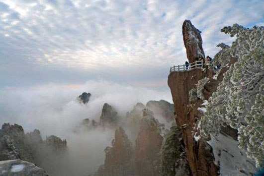

morly旅游网
黄山原名“黟山”，因峰岩青黑，遥望苍黛而名。后因传说轩辕黄帝曾在此炼丹，故改名为“黄山”。黄山位于安徽省南部黄山市境内，有72峰，主峰莲花峰海拔1864米，与光明顶、天都峰并称三大黄山主峰。黄山是世界文化与自然遗产、世界地质公园，是国家级风景名胜区、全国文明风景旅游区、国家5A级旅游景区，是中华十大名山之一，被称为天下第一奇山，也被世人誉为“人间仙境”。明代大旅行家徐霞客曾两次登临黄山，赞叹道：“薄海内外无如徽之黄山，登黄山天下无山，观止矣！”后人据此概括为“五岳归来不看山，黄山归来不看岳”。
黄山的景色秀丽神奇，雄奇险峻。玲珑俊秀的山峰，千姿百态,奇瑰丰美,总是让人产生疑惑，它真的是天然形成的吗？感觉像是被能工巧匠们精细雕刻过的的一样.黄山的峰也是极其险峻的，峰危屹立,怪石嶙峋，崖峭似刀削,几乎是九十度垂直的真梯,即使隔很远看也令人心惊肉跳,总感觉好像不注意就会从崖上跌下去摔的粉身碎骨似的。黄山的石头也是十分的怪，有的像报晓的公鸡,有的像仙人指路，有的像孔雀开屏，有的像天狗望月，有的像龟鱼对望，有的像狮子耍球...，这些石头奇形怪状，形态万千，十分有趣。黄山的松，也是十分奇丽的，它们大多数都扎根在悬崖峭壁上，远远望去，只感觉它们傲立于世间，遥望着这秀丽的山河。在黄山的各类松树中，最著名的还是迎客松.迎客松的枝叶都朝一个方向伸展,风一吹,一根根枝干摇摇晃晃,好像千万只小手挥舞着,仿佛在欢迎人们的到来。
黄山的景点有四绝三瀑、玉屏景区、北海景区、温泉景区、白云景区、松谷景区、云谷景区、云海佛光等，黄山四绝指的是奇松、怪石、云海、温泉，三瀑指的是黄山三大名瀑：“人字瀑”、“百丈泉”和“九龙瀑”。奇松即形态奇特的松树，黄山名松上百，最著名的是迎客松，位于玉屏楼东，是黄山的标志。黄山已被命名的怪石有120多处，其形态各异，十分有趣。黄山自古以来云成海，是云雾之乡，其瑰丽壮观的“云海”以美、胜、奇、幻享誉古今，走在山间，仿佛步入仙境。黄山温泉对消化、神经、心血管、新陈代谢、运动等系统的某些病症，尤其是皮肤病，均有一定的功效。去黄山游玩的游客，可以去泡泡温泉，对我们的身体有好处。人字瀑其形状如其名，成“人”字型瀑布。九龙瀑自罗汉峰与香炉峰之间分九叠倾泻而下，是黄山最为壮丽的瀑布。百丈瀑在黄山青潭、紫云峰之间，顺千尺悬崖而降，形成百丈瀑布。近有百丈台，台前建有观瀑亭。在2018年8月21日，在黄山的云海美景中，惊现佛光，远远望去就像是有一位佛主在那里打坐一样。黄山的景色真是十分奇峻，如果你不去,那将是你终身的遗憾。
黄山有也许多传奇故事，例如黄山由来、猴子观海、梦笔生花、仙人晒鞋等，这些传奇故事十分有趣，感兴趣的朋友可以去了解一下。黄山的特产繁多，有茶叶、香菇、石耳、笋衣、笋干、蕨菜、徽州贡菊、徽州雪梨、三潭枇杷、黄山猕猴桃、歙县金桔、黟县香榧等，去游玩的游客，可以带一点回去给家人品尝。
景区门票
平旺季：每张230元。冬游：每张150元。
索道票价格
（一）平旺季：云谷、太平索道票，单程每张80元；玉屏索道票单程每张90元；西海大峡谷观光缆车票单程每张100元。
（二）冬游：云谷、太平索道票，单程每张65元；玉屏索道票单程每张75元；西海大峡谷观光缆车票单程每张80元。
云海佛光
2018年8月21日，安徽黄山风景区现云海美景和佛光奇观。
温泉景区
黄山温泉景区古称桃源仙境，一般来说游览黄山均乘车至此，现为黄山旅游的接待中心之一。
北海景区
黄山北海景区是黄山景区的腹地，在光明顶与始信峰、狮子峰、白鹅峰之间，东连云谷景区，南接玉屏景区，北近松谷景区。
玉屏景区
黄山玉屏景区以玉屏楼为中心，莲花峰和天都峰为主体，前山就是指这一景区。沿途有“蓬莱三岛”、“百步云梯”、“一线天”、“新一线天”、“鳌鱼洞”等景观。
内容整理至网络，如有侵权，请联系我们！1255394075@qq.com